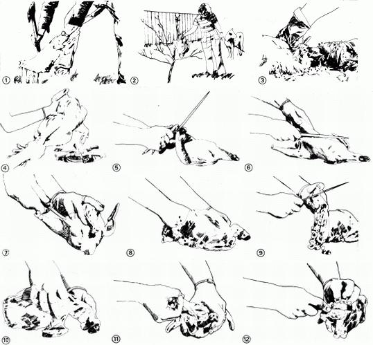

Homegrown "scratch" chickens-as any farm boy or girl raised on them knows-have a far better taste than the additive-packed, cage-reared, "factory" birds sold in the supermarkets. And that's one reason so many of us are starting to raise your own backyard flock of biddies for eggs and meat again. It's also why so many of us-for the first time in our lives-are (gulp) facing the unfamiliar and somewhat scary task of dressing out some of those backyard birds.
"Never fear," says Paula Delfeld, a chicken picker of some experience. "The job is not at all as difficult as you've probably imagined. Here's how I handle the chore on our farm up here in Brownsville, Wisconsin."
The price of freedom is always responsibility. And if you've taken up the raising of your own chickens to free yourself from weak, watery agribiz eggs and additive-laden, preservative-packed, and water-injected supermarket meat ... sooner or later you're going to have to assume the responsibility of picking, plucking, and preparing your own poultry.
When that day comes (EDITOR'S NOTE: Experienced homestead poultry raisers know that smaller birds, such as Leghorns, make delectable fried chicken when they're no bigger than a pound and three quarters to two pounds in size and that larger breeds, such as White Rocks, can be eaten as fryers as soon as they reach a weight of three pounds. They can also be eaten fried when they're larger too, of course . . . but there's something so mouthwateringly special about that first meal of homegrown fried chicken every summer that the old hands among us always seem to rush it to the table a little faster, maybe, than we should), your first step will be to examine your flock and pick out the first bird you want to butcher.
(EDITOR'S NOTE: Your chickens will stay a lot calmer and you'll work a lot less while catching the birds if you'll get yourself a long (eight to ten feet) length of 3/16" or 1/4" metal rod from the hardware store or a junkyard and bend one end into a handle and the other into a crook just b ig enough to slip over a chicken's leg but not big enough to slip over its foot. It's then a simple matter to slowly movearound through a pen or house full of the poultry and "hook" the birds one at a time at your leisure.)
Carefully inspect the chickens you catch. Pinfeathers are more difficult to remove than larger ones so, if you're rushing the season a little, make sure the young birds you butcher are well feathered out . . . otherwise, they may be hard to pick. You should also feel around the two bones that protrude just below the vent of mature hens. If you can fit three fingers between these bones, the chicken is probably laying which means (if you want the eggs) that you should pass that particular lady by in favor of another hen on which the bones are closer together.
As you select each bird-or group of birds-for the table, you can either cage them for later slaughter or kill them then and there. There are several ways to do this, but I prefer the simple and straightforward "axe and chopping block" method. The block can be any chunk of firewood, as long as it's solid and squared off on both ends so that it won't move around or tip over and cause you to hurt yourself or maim a chicken as you wield your axe or hatchet.
Hold the tips of each bird's wings (to give you more control) right along with its feet in one hand as you position the chicken's head (with its neck well stretched out) on the block. One quick, firm, well-placed blow (Fig. 1) with a sharp axe or hatchet, then, is all you should need to sever the bird's head.
Continue to hold the chicken with its neck down so that it'll bleed well. The blood can be allowed to fall around the bases of your fruit trees, if you have any (Fig. 2), where it will both serve as a good fertilizer and discourage rabbits from kill ing the trees by nibbling away their bark. If you need to, hold both the bird's wings and feet during this bleeding process to keep it from flopping around and spraying blood on you.
As soon as the chicken is bled-but before it has a chance to stiffen-you should carry it directly to a waiting pile of old newspapers, a sharp paring knife, a bucket of boiling water, and a pan of cold water . . . for scalding, picking, and washing.
Although authorities on the subject recommend that young birds be scalded for only a few seconds in 150° to 160°F water and that older birds be dipped slightly longer in water heated to 180° or 190°F, experience will soon teach you that temperature and dipping times are not as critical as these experts would have you believe. Just remember that if your water is too cold and/or you do not immerse a chicken in it long enough ... the bird will be hard to pick. And if the water is too hot and/or you leave your poultry in it too long . . . the feathers will practically fall out by themselves, but the skin of each plucked bird will be discolored and may even break in several places.
Relax! No matter how poorly you scald and pick your first few chickens, they should still be edible. Practice makes perfect. Keep trying. You'll soon get the hang of it. I don't even use a thermometer. I just remove my boiling water from the fire, dip a chicken in quickly if it's young and a little more slowly if it's older, re-dip the really tough birds as necessary, and then place each scalded bird on the pile of newspapers and let it steam for a few minutes. Then, as soon as the wing feathers will pull out easily, I know it's time to go to work.
Grasp the body of a scalded and steamed bird in one hand and one of its legs at the top of the thigh in the other. Then (Fig. 3) pull the second hand down toward the leg's foot. Most of the feathers will slip right off the leg in one operation. Repeat this process on the other leg, both wings, and the neck. If the chicken was scalded properly and didn't have too many pinfeathers, most of the body feathers can then be pulled out by the handful. In the beginning, of course, you'll probably select chickens that are "all" pinfeathers, scald them poorly, and pick so slowly that the birds' feathers tighten up on you again before you have them cleaned. Don't despair! Work faster and you'll soon have the knack of stripping the feathers from a chicken so quickly and easily that others will think the fowl picked itself. In the meantime, though, reconcile yourself to slowly and laboriously plucking seemingly endless pinfeathers from your first few birds . . . one . . . . by . . . . . tedious . . . . . . one.
OK. Feathers and pinfeathers all out? You're ready to singe away the fine hairs that are still on the chicken. This can be done over an open gas flame (Fig. 4) or, if you have a wood-burning cookstove, you can remove one of the range's lids, shove a wadded section of newspaper down the "eye", light the paper, and singe the chicken over the blaze. Or just twist some newspaper together, strike a match, and singe your birds outside if the wind isn't blowing too hard.
Remove the picked and singed chicken's feet by bending each foot back (Fig. 5) and cutting through the joint. Some people like to skin the feet and cook them for soup or to add flavor to broth. Others just throw the unskinned feet to the dogs.
If your bird is to be cooked whole, you can now advance directly to Fig. 7 and its accompanying copy. If the chicken is to be cut up, however, you may find it easier at this point to cut off the legs (Fig. 6). Pull each one away from the body and cut between the body and the leg-right down to the joint-with a sharp knife. As you then bend the drumstick and thigh further out from the body the joint should separate, and you should be able to cut the leg completely away. Wings may be removed in the same manner, either now or after the bird has been gutted. Rinse off each severed piece of meat and drop it into your pan of cold water.
To remove the chicken's entrails, slit the skin from the end of the breastbone (Fig. 7) all the way to the vent. You can insert your fingers into the opening behind the knife blade as you make this cut if you like, to help prevent the accidental puncturing of the bird's intestines. To simplify the removal of the entrails, you may also want to make a second incision across the chicken's belly, just below the breastbone (this cut can be made right down to the backbone) . . . and you .should also make sure that your first cut is continued around the vent.
Now (Fig. 8) insert a hand into the opening you've just made and work your fingers around the intestines to loosen them from the cavity. This is also the time to locate the tube leading up to the neck and cut if off as close as possible to its upper end. (Yes, this is the messiest part of the whole job, but it'll soon be over.)
Success! As soon as the "neck tube" is cut, all the bird's innards will slide right out of the body cavity. Locate the greenish gall sac in the liver and cut around it without spilling its bitter contents on any of the meat you want to save. Then (Fig. 9) cut off the gizzard, liver, and heart. Cut into the gizzard until you reach its lining and remove the organ's contents with the lining. (This will be a little difficult to do and, usually, some of its contents will get on the gizzard. Don't worry. It'll rinse off easily.) Put the clean gizzard, liver, and heart in your pan of cold water.
Now (Fig. 10) make an incision in the neck just above the breastbone and locate the two tubes leading to the crop (sometimes called the craw) and the lungs. Work your fingers around the craw and carefully remove the crop (Fig. 11) without rupturing it. The lungs can be taken out as the body of the bird is cut up. Or, if the body will be left whole, you can reach into the lower opening that you've made in the body and run your fingers under the lungs to remove them.
Finally (Fig. 12), remove the oil sac above the tail by cutting under and around it. Wash all the meat you've saved. If the chicken is to be baked or roasted, you can put it into the oven whole. If it's to be fried or prepared in some other way that calls for individual pieces, cut up what's left . . . and you're finished.
The disagreeable part of preparing a chicken is soon forgotten when the bird is brought to the table in the form of a delicious dish. Here's one of my favorites:
Dip individual pieces of chicken in milk, then in a mixture of flour, salt, and pepper. Brown the chunks of meat in oil or other shortening, and then put them in a deep baking dish. Add one-half cup of water and bake at 350°F. When tender, mix one can of mushroom soup with 3/4 cup of water and pour over the chicken. Bake 15 to 20 minutes longer and serve.
|
 |
|
|